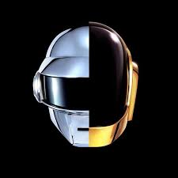
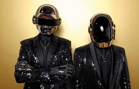
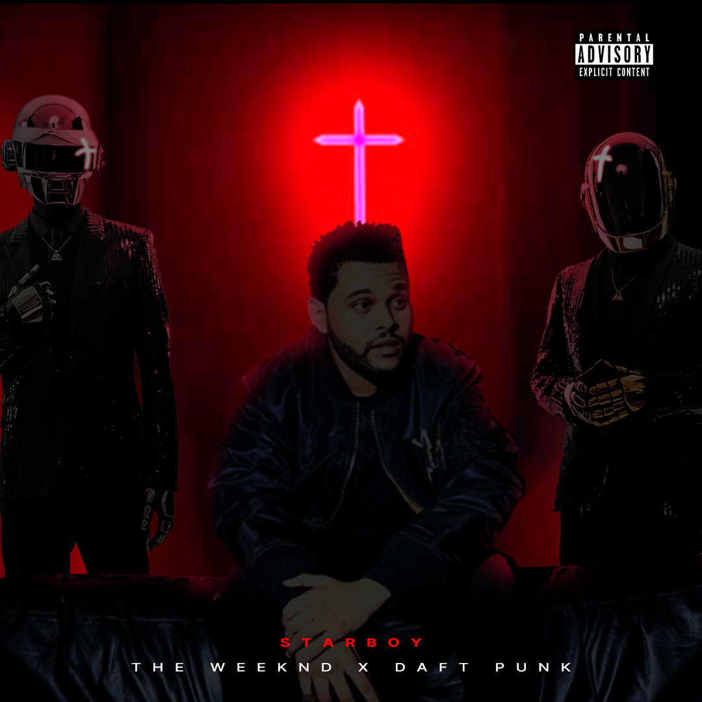

Daft Punk

Hey, I got to know about Daft Punk because of a collaboration song with Weeknd and called StarBoy. This is an absolutely
amazing song, then i did some research on the music composers i.e. Daft Punk and found out that
Daft Punk are a French electronic music duo formed in Paris in 1993 by Guy-Manuel de Homem-Christo and Thomas
Bangalter. They achieved popularity in the late 1990s as part of the French house movement; they also had
success in the years following, combining elements of house music with funk, techno, disco, rock and
synthpop.They have worn ornate helmets and gloves to assume robot personas in most public appearances since
1999 and rarely grant interviews or appear on television. The duo were managed from 1996 to 2008 by Pedro Winter
(also known as Busy P), the head of Ed Banger Records.
Early Life
Guy-Manuel de Homem-Christo and Thomas Bangalter met in 1987 while attending the Lycée Carnot secondary school in
Paris.The two became friends and recorded demos with others from the school. This led to the formation of a
guitar-based group called Darlin' with Laurent Brancowitz in 1992. Bangalter and Homem-Christo played bass and guitar,
respectively, while Brancowitz was brought on board after the two sought an additional guitarist.The trio had
branded themselves after The Beach Boys song of the same name, which they covered along with an original composition.
Both tracks were released on a multi-artist EP under Duophonic Records, a label owned by the London-based band
Stereolab, who invited the trio to open for stage shows in the United Kingdom.Bangalter felt that "The rock n' roll
thing we did was pretty average, I think. It was so brief, maybe six months, four songs and two gigs and that was
it." A negative review in Melody Maker by Dave Jennings subsequently dubbed the music "a daft punky thrash."
Instead of dismissing the review, they found it amusing. As Homem-Christo stated, "We struggled so long to find [the
name] Darlin', and this happened so quickly."Darlin' soon disbanded, leaving Brancowitz to pursue other efforts
with Phoenix. Bangalter and Homem-Christo formed Daft Punk and experimented with drum machines and synthesisers.

Career
Daft Punk worked on their fourth studio album, Random Access Memories, with musicians including Paul Williams, Chic
frontman Nile Rodgers, and Giorgio Moroder. In January 2013, Homem-Christo revealed that Daft
Punk was in the process of signing with Sony Music Entertainment through the Columbia Records label, and that the album
would have a spring release.A gradual promotional rollout was later launched featuring billboards and television
spots, leading to the reveal of the album title and the release date of 21 May 2013. On 3 April, the official
Random Access Memories website launched The Collaborators, a series of documentary videos about the album. Later
that month, a video preview for the song "Get Lucky" featuring Rodgers and Pharrell Williams was played at the 2013
Coachella Valley Music and Arts Festival. The radio edit of the song was released as a digital download single one
week later on 19 April 2013."Get Lucky" became Daft Punk's first UK No. 1 single on 28 April 2013 remaining at
number one for 4 weeks (as of 24 May) and the Spotify music streaming website reported that the song is the
most-streamed new song in the service's history.At the 2013 MTV Video Music Awards, Daft Punk debuted a trailer for
their single "Lose Yourself to Dance," and presented the award for "Best Female Video" alongside Rodgers and
Pharrell. In December, the duo revealed a music video for the song "Instant Crush," directed by Warren Fu and
featuring Julian Casablancas.

Sound track
- Homework (1997)
- Discovery (2001)
- Human After All (2005)
- Tron: Legacy (2008)
- Random Access Memories (2013)
Tour
- Daftendirektour (1997)
- Alive 2006/2007 (2006–07)
Awards
-
Best Original Score
-
Top Dance/Electronic Artist
-
Top Dance/Electronic Album
-
International Group
-
Song of The Year (I feel it coming)
-
Best Foreign Band
-
Best Foreign Song (Get Lucky)
-
Album of the Year
- Best Dance/Electronic Album
- "Get Lucky" Record of the Year
- Best Pop Duo/Group Performance
DJ Magazine Top 100 DJs
- In year 2017 , 73 position in New Entry
Youtube
Instagram
Spotify
Wikipedia